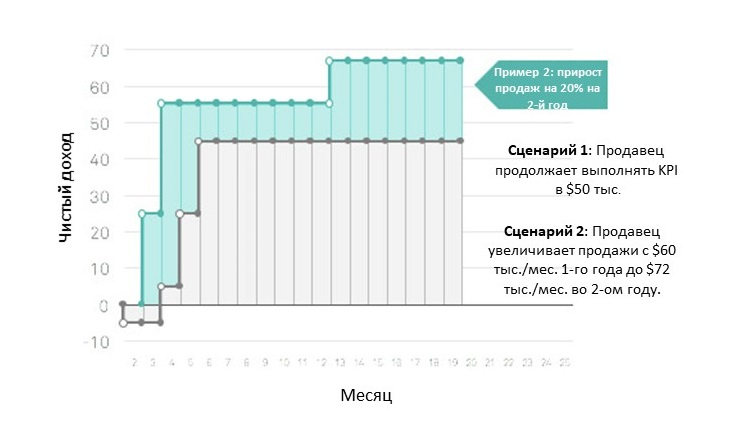

Как увеличить возврат инвестиций от вложений в сотрудников
Описать окупаемость инвестиций (ROI), вложенных в рабочую силу чрезвычайно сложно. В отличие от других разделов организации производства, результаты работы сотрудников напрямую связаны с результатами бизнеса и являются мало измеримыми. Из-за этого трудно продемонстрировать ту абсолютную ценность инвестирования в свои способности или в практику работы с персоналом.
Однако даже небольшие улучшения в процессах найма, обучения и управления персоналом могут привести к значительному возврату инвестиций (ROI) для бизнеса. В этой статье мы расскажем об одном тематическом исследовании, который количественно оценивает возврат от некоторых практик работы с персоналом, и предложем структуру, которая поможет вам более широко сформулировать ROI в рабочую силу.
Чтобы помочь оценить влияние практики работы с персоналом на развитие бизнеса, мы хотели бы познакомить Вас и, тем самым, выделить определение: использование Жизненной Ценности Сотрудника (ЖЦС) для сравнения инвестиционных возвратов от вложения в разные методы работы с персоналом.
Определение ЖЦС
Жизненная ценность сотрудника представляет собой общую чистую стоимость за время, которое сотрудник приносит организации. Работа HR отдела заключается в том, чтобы стимулировать организацию к максимальному развитию ЖЦС. Организация может достичь этой цели, разрабатывая и выполняя программы, которые влияют на элементы, управляющие ЖЦС. Когда мы помещаем эти программы в контекст жизненной ценности сотрудников, мы можем более четко увидеть их относительную рентабельность и их вклад в бизнес.
Эта концепция проиллюстрирована на графике ниже, который представляет ЖЦС с точки зрения жизненного цикла в компании. Ось X символизирует время от даты начала до дня, когда сотрудник увольняется, а ось Y представляет результаты работы сотрудника.
На «Старте» результат работы сотрудников является отрицательным, потому что они еще не внесли свой вклад в работу команды, но уже потребили ресурсы компании по подбору и найму персонала
Затем они наращивают производительность, пока не достигают следующего этапа, «Высокая продуктивность», когда сотрудники полностью осваивают свою роль.
В какой-то момент работа сотрудников достигает пика, и они начинают рассматривать другие варианты трудоустройства. Они принимают «Решение об увольнении». Как правило, после этого момента их производительность начинает снижаться.
Наконец, сотрудник достигает своего «Последнего дня» в компании. В этот момент их результат работы обнуляется.
4 способа улучшения Жизненной ценности сотрудника (ЖЦС)
ЖЦС представлен серой заштрихованной областью под кривой (интеграл для тех, кто любит исчисление). Цель обычно состоит в том, чтобы сделать эту область максимально высокой и максимально широкой. Примечание: это упрощенная версия кривой для иллюстрации. На самом деле, на кривой есть провалы и впадины, и, как правило, она не такая идеально прямая.
Как показано, есть четыре способа увеличить ЖЦС или максимизировать площадь под кривой:

Эти входные данные могут быть наглядно проиллюстрированы на нескольких стратегических этапах работы с персоналом, как представлено ниже. На самом деле каждая из этих практик влияет на всю кривую, но для иллюстрации влияния, исключены те, которые варьируются.
Подготовка к работе: Хорошая программа адаптации к работе выполняет две цели: 1) сокращает время, необходимое сотруднику, чтобы стать полноценным работником, и 2) значительно увеличивает вероятность того, что сотрудник останется в компании на долгий срок.
Найм: Улучшенный процесс трудоустройства имеет более высокую максимальную отдачу с самого начала, плюс имеет дополнительный эффект интереса и карьерного продвижения других сотрудников.
Управление и развитие: Улучшенные методы управления и практики развития увеличивают ценность, которую сотрудник со временем приносит организации.
Управление и культура: Сильная практика управления и позитивная культура напрямую связаны с удержанием сотрудника в компании, что приводит к увеличению ЖЦС.
Примечание к подтверждающим данным по приведённой информации:
Команда Гринхауз провела тщательный анализ существующих исследований по этим темам. Хотя и не исчерпывающе, но мы рассмотрели большинство основных работ, опубликованных за последние десять лет. Наш вывод заключается в том, что детальных исследований и данных недостаточно, чтобы дать точные выводы о влиянии перечисленных практик. Информация является направляющей, и мы чувствуем себя комфортно, делая предположения на ее основе *, и * мы хотели бы быть частью движения для того, чтобы получить большее количество данных по данной тематике. Мы указали использованный подтверждающий материал в приложении ниже.
Тематическое исследование | Влияние практик работы персонала на ЖЦС
Чтобы продемонстрировать влияние этих способов, давайте рассмотрим два общих сценария. Чтобы показать, какое влияние может оказать даже небольшое улучшение в практиках работы с персоналом, будут использованы относительные предположения для каждого способа. На самом деле, различия могут быть намного больше.
– Сценарий 1: обычная компания со средней кадровой организацией.
– Сценарий 2: компания с немного улучшенной, более оптимизированной кадровой организацией.
Мы будем использовать продавцов для наших сценариев, так как их результаты более измеримы, чем результаты работы других должностей. Давайте предположим, что как в Сценарии 1, так и в Сценарии 2 продавцы имеют зарплату в 5000 долларов в месяц и доходность в 50 000 долларов в месяц. Их прогнозируемая выработка в месяц составляет 50 000 долл. США за вычетом их заработной платы в 5 000 долл. США, в результате чего чистая прибыль – 45 000 долл. США в месяц.
Важное примечание: для большинства должностей выходной результат не будет легко измеряться одним числом. В таких случаях вы можете выполнить аналогичное упражнение, просто сравните различные сценарии и оцените их на основе относительной ценности. Как правило, различия будут достаточно убедительными, даже при отсутствии точных расчетов.
Влияние Подготовки к работе
Относительное предположение: улучшенная программа подготовки к работе, которая включает в себя предварительное ознакомление, применяет новейшие техники найма и обучение, может сократить время подготовки сотрудника на 30%.
Влияние процесса найма
Относительное предположение: улучшенный процесс найма – который может быть достигнут посредством использования структурированных и основанных на детальных подходах к поиску, проведению собеседований и отбору – может предопределить специалиста на 20%.
Влияние управления и развития
Относительное предположение: отличные методы управления и развития, которые включают в себя тренинги и обучение, могут повысить производительность работника на 20% в год.
Влияние культуры и управления
Относительное предположение: отличная культура и управленческие практики могут добавить год к сроку пребывания сотрудника на работе.

Откровение на миллион долларов
Если мы продолжим график в течение трех лет и предположим, что для замещения продавца в сценарии 1 потребуется 4 месяца, относительная разница в ЖЦС станет ошеломляющей. В тематическом исследовании, которое мы рассмотрели, разница между средней и слегка оптимизированной практикой работы с персоналом для одного продавца в течение трех лет составляет 1 300 000 долларов чистого дохода, или разницу в 2,5 раза для организации.
Применение ЖЦС для профессий с менее измеримыми результатами
Доходность работы продавца легко измерить. Становится намного сложнее сформулировать результаты работ других профессий, которые оказывают менее измеримое влияние на прибыль предприятия. Тем не менее, относительная разница в ЖЦС между средней и безукоризненной практикой работы с персоналом настолько значительна, что простое сравнение двух сценариев может дать вам достаточно информации для оценки рентабельности любой практической инициативы.
Мы можем применить ЖЦС к инжинерингу, но вместо «чистого дохода» на оси Y, давайте использовать абстрактное понятие «производительность инженерии». В исследовании по продажам я предположила разницу в 20% между двумя продавцами. В инженерии я слышала, как некоторые люди говорят, что великий инженер в 10 раз лучше среднего инженера. Для того, чтобы придерживаться относительных предположений, мы будем иметь в виду, что разница между инженером № 1 и инженером № 2 является трёхкратной. Разница в ЖЦС между этими двумя примерами составляет 6,6 раз за три года Другими словами, это означает, что один инженер в сценарии 2 может выполнять работу 6 инженеров в сценарии 1. Это ошеломляющий возврат инвестиций от вложений в управление персоналом.
Что эта модель скрывает?
Я действительно очарована данной концепцией. Но есть одна часть, которую я ненавижу. Я ненавижу, что это подразумевает тот факт, что люди — это число (то есть их ЖЦС). На протяжении всей моей карьеры я уделяла первостепенное внимание созданию отличных команд и формированию наилучшей рабочей обстановки, которую только возможно создать. Для меня конечной целью является инвестирование в людей, их развитие и то, как мы все работаем вместе. Я хочу, чтобы моя команда росла, развивалась, оказывала влияние и получала удовольствие от работы. Если бы у меня были неограниченные ресурсы, я бы вложила большинство из них в своих работников. НО большинство предприятий не владеют неограниченными ресурсы. Как руководитель, я каждый раз стою перед трудным выбором – куда инвестировать. Поэтому и я разработала модель ЖЦС в качестве основы, чтобы помочь мне обосновать и сформулировать все инвестиции, которые, по моему мнению, должны быть сделаны в людей. Я искренне надеюсь, что компании используют эту концепцию в данном видении, и понимаю, что инвестировать в свой талант – не просто правильная вещь, а разумная вещь. Жизнь становится лучше, когда работа становится более увлекательной, более полезной и веселой, и так получилось, что мы можем обосновать эту философию и с точки зрения рентабельности инвестиций.
Подводя итоги
- -Используйте ЖЦС для оценки рентабельности практик работы с персоналом.
- -Практики ЖЦС: найм, подготовка к работе, управление, развитие и культура.
- -Когда невозможно рассчитать точное значение, сравните относительный результат. Различия настолько значительны, что рентабельность инвестиций будет достаточно очевидной.
Даже небольшое улучшение практиках может оказать существенное влияние на ЖЦС. В одном из приведенных выше примеров мы увидели 6-кратную разницу в ЖЦ одного сотрудника за 3 года.
Возникли вопросы или хотите воспользоваться услугой?
Оставьте заявку прямо сейчас!
Свяжитесь с нами Для того чтобы заказать услугу или задать вопрос на сайте, обращайтесь любым удобным для Вас способом!